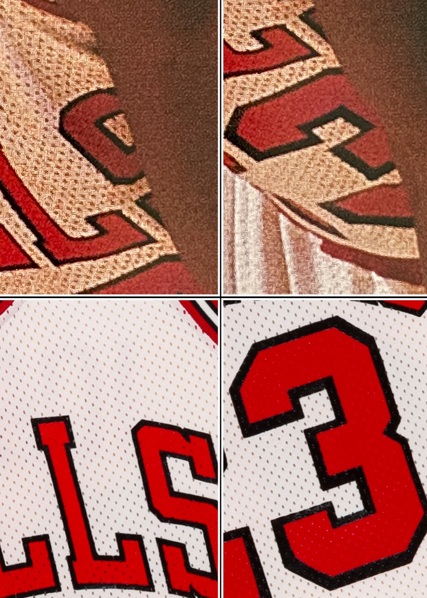
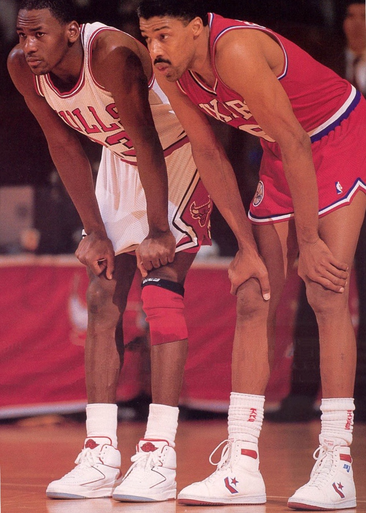

1986–87 Chicago Bulls — Home Uniform


Findings Summary
Source imagery was first identified in a period publication and subsequently cross-referenced against the full 1986–87 Chicago Bulls game video logs. Comparative analysis of construction, mesh alignment, and garment-specific wear characteristics confirms use during the February 10, 1987 game versus Philadelphia.
- Mesh hole alignment within the “BULLS” wordmark consistent across all examined frames
- Distinct mesh alignment surrounding the outer border of the number “3” conclusively matched
- Short mesh pattern alignment along the upper torso band and side panels verified
- Shorts logo mesh alignment within the bull’s horns and adjacent thread structure consistent with in-game photography